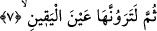
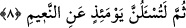

bırakıldıktan sonra bu ifâdelerle açıklanmıştır. Bu da meselenin ne kadar ehemmiyetli
olduğunu göstermek için yapılmıştır.
Bu âyet-i kerime, önceki âyetteki “lev”in cevabı değildir. Çünkü “alevli ateşin
görülmesi” herhangi bir şart olmaksınız mutlakâ vukû bulacaktır. “Lev”in cevâbı kabul
edilecek olsa, o zaman mânâ: “Siz câhil olduğunuz için onu göremeyeceksiniz” şeklinde
olurdu ki bu sahîh değildir.
Bazıları bu âyetin “lev”in cevâbı olabileceğini söylemiştir. Buna göre âyetin mânâsı
şöyle olur: “Siz cezânın ne olacağını öğreneceksiniz.” Sonra şöyle buyurdu: “Eğer siz o
cezâyı şu anda kesin bir bilgi ile bilmiş olsaydınız o alevlenmiş ateşi mutlakâ
görürdünüz. Yâni Cehennem devamlı gözünüzün önünde olur, onu aslâ unutmazdınız.”
7. Sonra âhirette onu çıplak gözle göreceksiniz.
Bu âyet, önceki âyeti tekid etmek için tekrâr edilmiştir. Veya ilk âyet onların
Cehennemi uzaktan alevi, dumanı gibi bazı husûsiyetleri ve hâlleriyle görmelerini,
ikincisi de içine girince görmelerini ifâde etmektedir. Çünkü bizzat çukuru, içindeki
eziyet verici hayvanları ve oraya nasıl düşüleceğini görmek, birinci görmekten daha
açık ve daha nettir. Bu durumda “ayne’l-yakîn” ifâdesinin bu iki fiilden hangisine bağlı
olacağı bilinemez. Veya birinci görmekten murâd mârifet, ikincisinden murâd da
müşâhede ve muâyenedir.
“Ayne’l-yakîn”, yâni yakîn’in bizzat kendisi olan “rü’yet/görmek”. Çünkü
hissedilebilen şeyleri müşâhede ilmi, yakîn mertebelerinin en yükseğidir. “Yakînî
bilgilerin en üstünü, evveliyâttır” sözü buna aykırı değildir.
Bu âyet-i kerimede “rü’yet/görme”nin “ayne’l-yakîn” kelimesi ile kayıtlanması, içinde
hislerin yanıltması bulunan “rü’yet”i hüküm dışına çıkarmak içindir.
Bu âyette, “yakîn”e sebep olan “rü’yet”in, bizzat “yakîn”in yerine konması, mübâlağa
içindir.
8. Nihâyet o gün (dünyada faydalandığınız) nîmetlerden elbette ve elbette
hesâba çekileceksiniz.
et-Teysîr’de deniyor ki: “Sümme” kelimesi, var olmada değil, haber vermede bir
tertîb ifâde eder. Çünkü “bu nîmetlere şükür mü ettin, yoksa nankörlük mü ettin?”
şeklindeki soru, Cehenneme girmeden önce hesâb esnâsında olacaktır.
Buna göre âyetin mânâsı şöyle olur: Yakıcı ateşi gördüğünüz ve ona girmek üzere